Армения - Армянский драм
1000 драмов
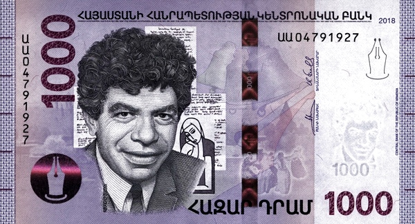 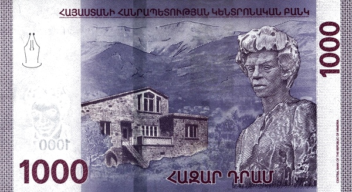Лицевая сторона - Паруйр Севак
Обратная сторона - дом-музей Паруйра Севака в Зангакатуне, памятник поэта
2000 драмов
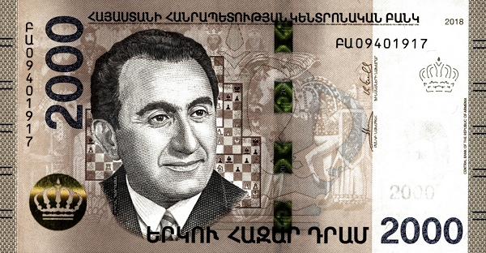 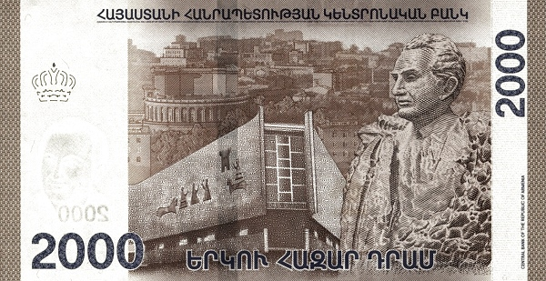Лицевая сторона - Тигран Петросян, шахматная доска
Обратная сторона - Центральный дом шахматиста имени Петросяна в Ереване, памятник Петросяну
5000 драмов
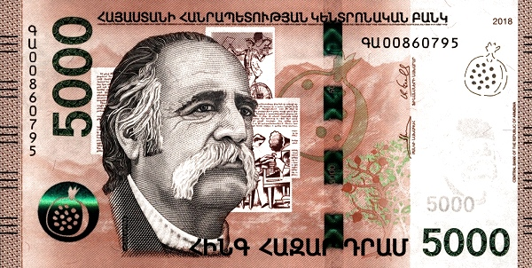 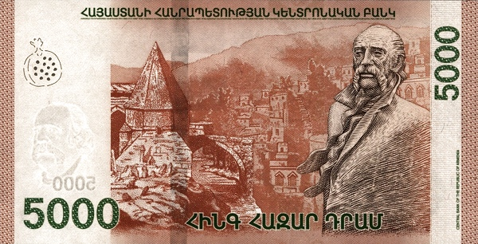Лицевая сторона - Уильям Сароян, подборка книг Сарояна, гора
Обратная сторона - Памятник Сарояну в Ереване
10000 драмов
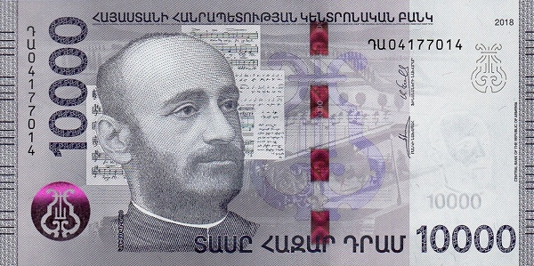 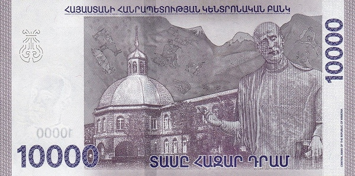Лицевая сторона - Комитас
Обратная сторона - Семинария Геворгяна и памятник Комитасу, Вагаршапат
20000 драмов
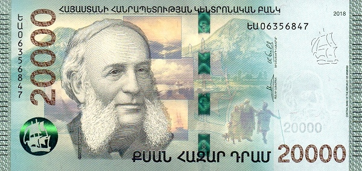 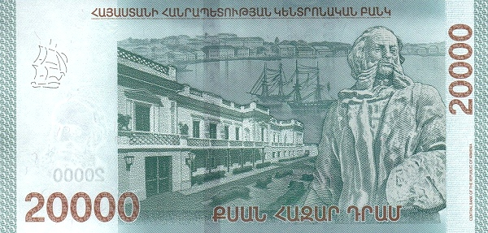Лицевая сторона - И. К. Айвазовский
Обратная сторона - Музей и памятник Айвазовскому в Феодосии, Крымский полуостров
50000 драмов
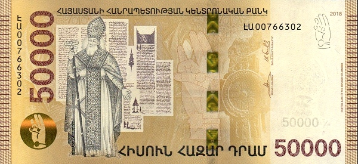 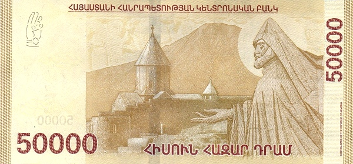Лицевая сторона - Григорий Просветитель
Обратная сторона - Хор Вирап, Арарат, могила и статуя Григория Просветителя